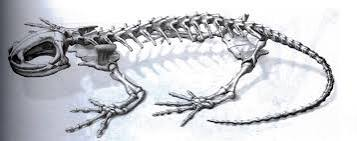

"Axolotolandia"
Mitologia Anatomia ConservacionCaracteristicas de los ajolotes
Lista hecha por Roshely Molina
Alimentos que comen los ajolotes
- Microalgas
- Alga espirulina
- Lombris de tierra
Enfermedades de los ajolotes
HTML- Origen de parasitos
- Origen bacteriano
- Origen viral
Mitología
El axolote aparece ligado a los más antiguos mitos mexicas. Su nombre en nahúatl (axólotl) quiere decir “xólotl de agua” y se ha traducido como “juguete de agua”, “monstruo acuático”, “gemelo de agua” o “perro de agua”. Es evidente que hace referencia al dios Xólotl, una especie de Caín heroico de los nahuas que es el hermano gemelo de Quetzalcóatl o, para ser preciso, su doble. Mientras Quetzalcóatl es el “gemelo precioso”, Xólotl es monstruoso y deforme. En la leyenda del quinto sol se indica que en la ciudad sagrada de Teotihuacán los aztecas creían que cuando Nanahuatzin y Tecuciztécatl se tiraron a la hoguera se convirtieron en el sol y la luna respectivamente; los dioses, al darse cuenta de que el sol y los astros seguían sin moverse, decidieron morir también, pero hubo uno, Xólotl, que se negó al sacrificio. Xólotl es un dios que le tiene miedo a la muerte y no la acepta. Por ello escapa del sacrificio mediante sus poderes de transformación. Primero se convirtió en maíz, pero el verdugo lo encontró; se escapó nuevamente y se transformó en maguey, pero fue encontrado una vez más. Finalmente se transformó en axolote, forma en la que encontró la muerte.
Anatomia
Los axolotes presentan esqueleto que al no estar completamente osificado difiere de la mayoría de los vertebrados. Este proceso es evidente en la zona de las branquias que están compuestas en su totalidad por cartílago. El cráneo de los anfibios en general, presenta mayor número de estructuras cartilaginosas que óseas, y presenta conductos que comunican la cavidad nasal con la bucal, llamados coanas u orificio nasal interno.
Conservación
Actualmente las acciones para la conservación de esta especie se están centrando en mejorar las condiciones del Lago de Xochimilco a través de la educación para la conservación, ecoturismo, restauración del hábitat, control de especies introducidas de peces (como carpas y tilapias) y estrategias alternas para la conservación de axolotes in situ como la generación de refugios. Los proyectos que actualmente se desarrollan integran los cuatro grandes sectores para la conservación: político, social, económico y científico. La reintroducción de axolotes que han sido criados en cautiverio no se recomienda hasta que las amenazas (como crecimiento urbano, ganadería, uso de agroquímicos, fragmentación del hábitat, control de especies introducidas, posibles enfermedades, riesgos genéticos, entre otras) puedan ser mitigadas o evaluadas dependiendo del caso.
para saber mas clik